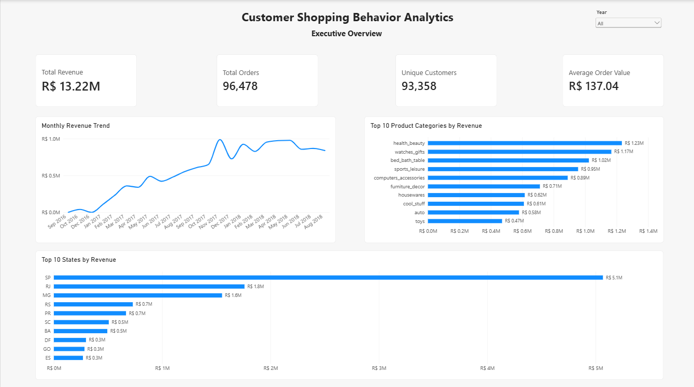

FEATURED PROJECT / 01
Customer Shopping Behavior Analytics
An end-to-end analysis of Brazilian e-commerce customer behavior, combining exploratory analysis, RFM segmentation, customer lifetime value, retention analysis, predictive modeling, and business intelligence.
R$13.22M
Revenue Analyzed
93,358
Unique Customers
62.53%
VIP Revenue Share
Python
pandas
scikit-learn
Power BI
DAX
Jupyter